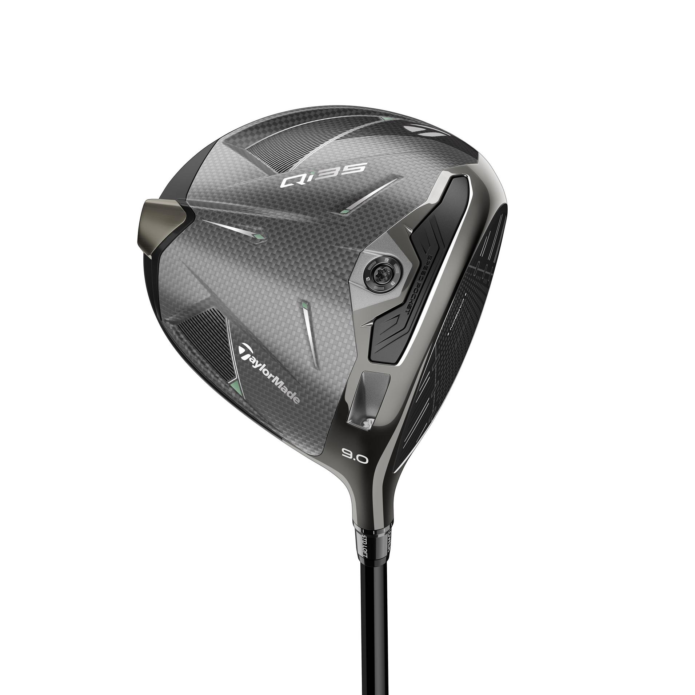
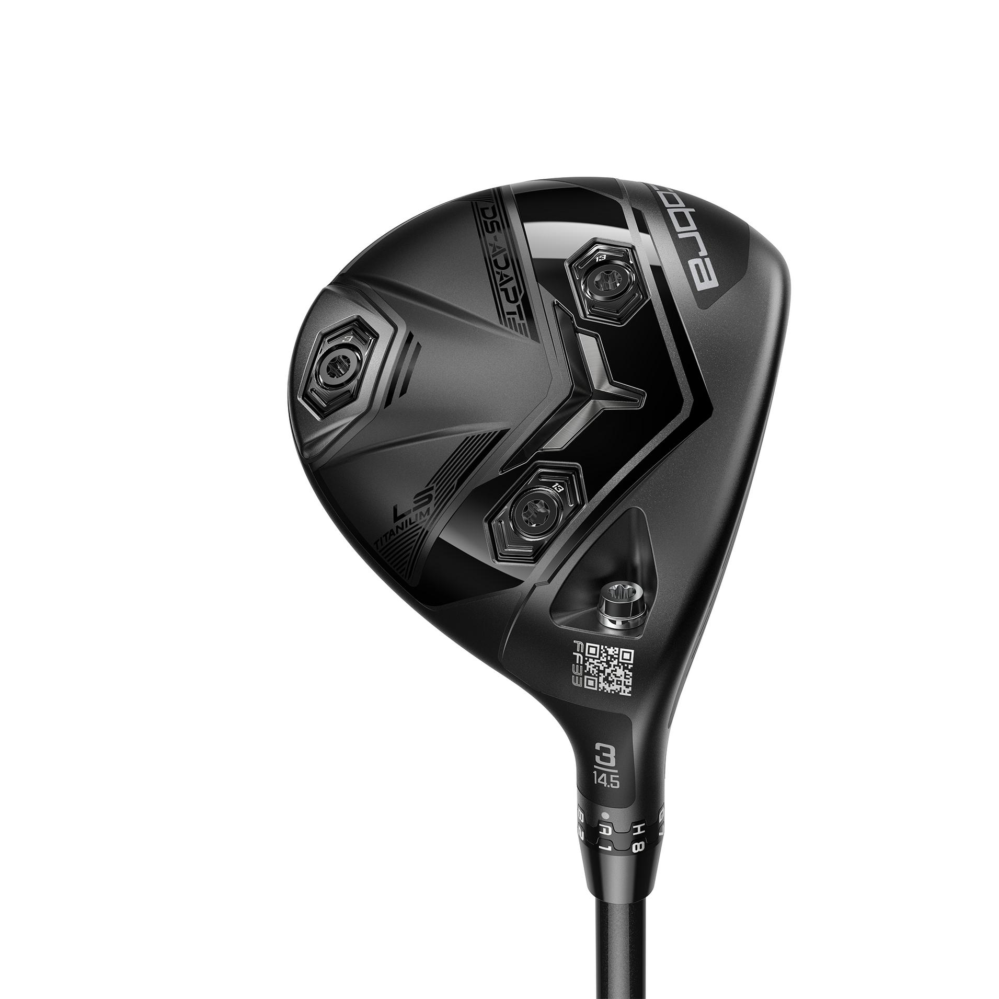
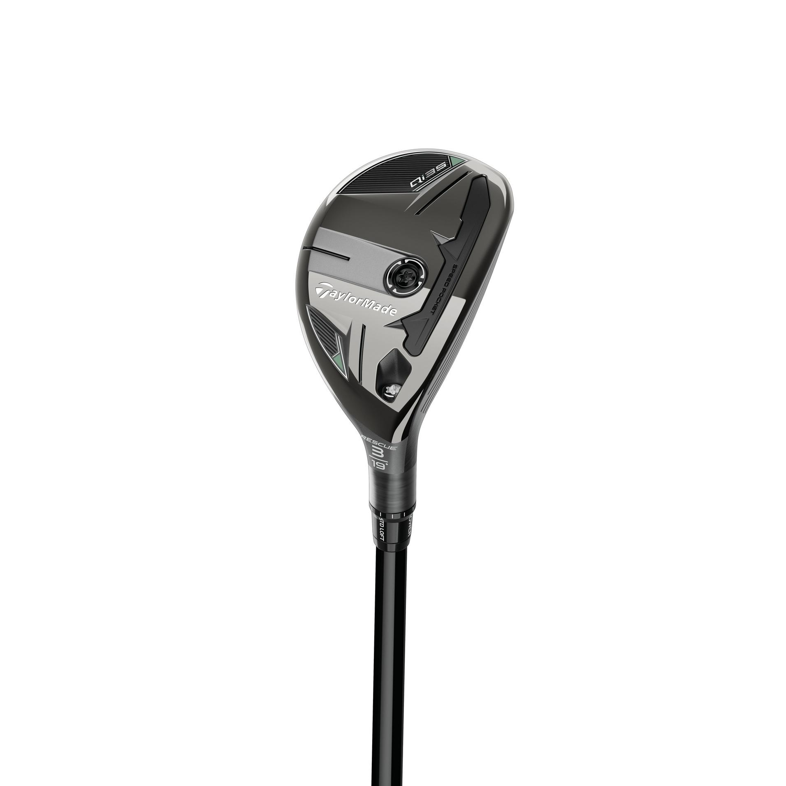
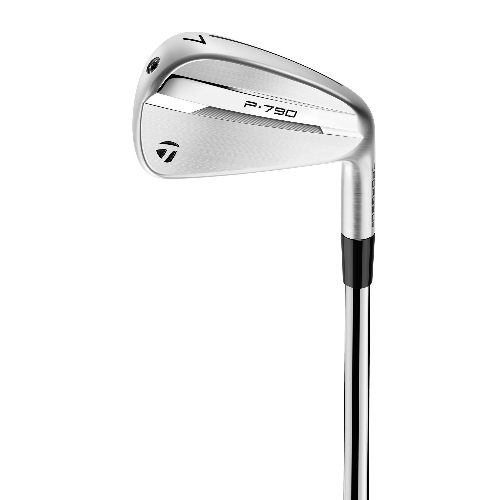
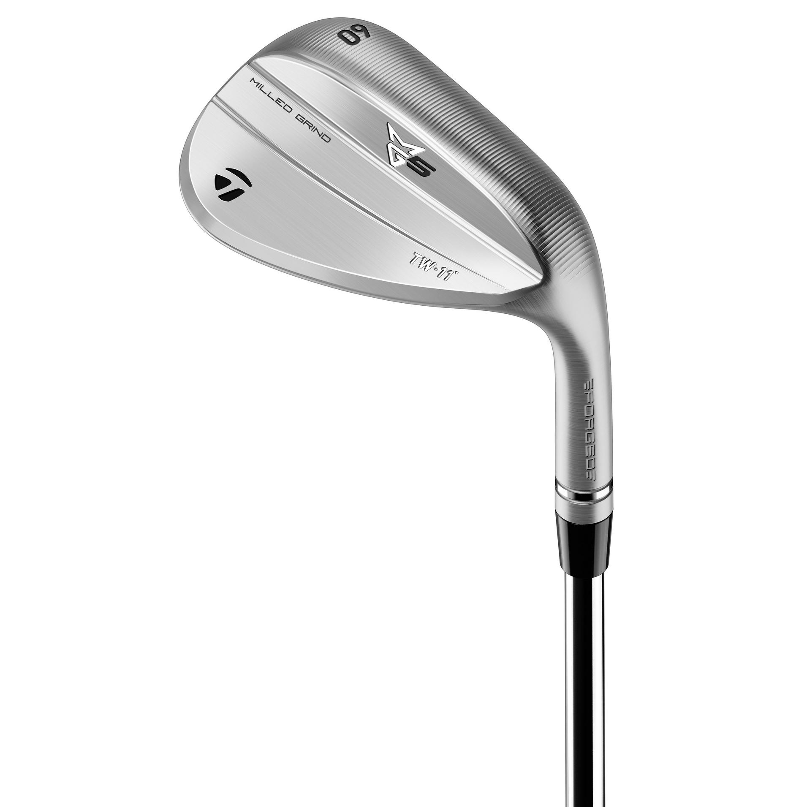
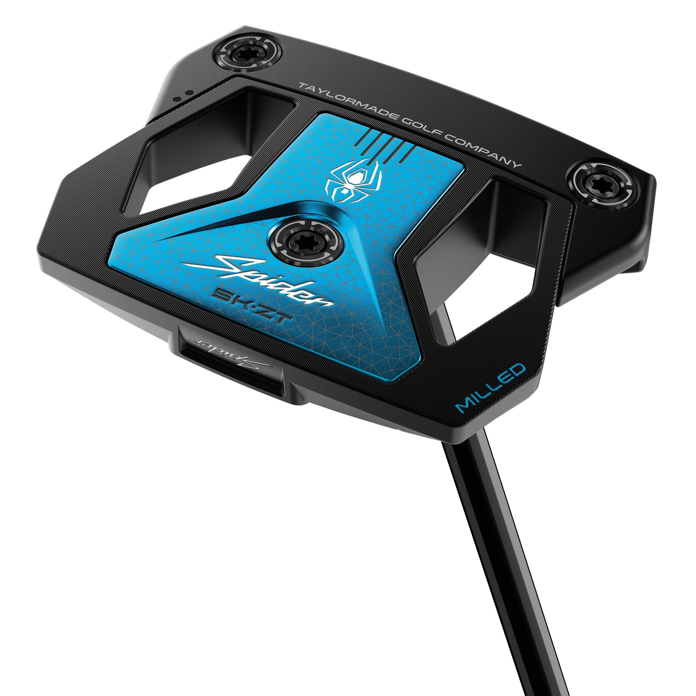

Explore Golf Clubs
This page provides a simple overview of the main types of golf clubs found in a typical golf set. Each section shows an example image on top with a short explanation below.
Drivers

The driver is designed for maximum distance from the tee. It has the largest clubhead and the lowest loft in the bag. Drivers are used mainly on long par-4 and par-5 holes to achieve maximum carry distance and position the ball for the next shot.
Key ideas: low loft, large head size, and a long shaft. A well-fit driver can help golfers start each hole in a strong position.
Fairway Woods

Fairway woods are versatile clubs that can be used from both the tee and the fairway. They have more loft than a driver but still offer impressive distance.
Many golfers rely on a 3-wood or 5-wood when they want a balance between distance and control, especially on narrow fairways.
Hybrids

Hybrids combine features of fairway woods and irons. They are designed to be easier to hit than long irons, offering better launch and forgiveness from different lies.
Many golfers replace their long irons (such as 3-iron and 4-iron) with hybrids to improve consistency on longer approach shots.
Irons

Irons are used for approach shots, fairway shots, and shorter tee shots. They are often numbered from 4 to 9, with each number producing a different shot height and distance.
Irons make up the “core” of a golfer’s set, offering control of trajectory, spin, and shot shape.
Wedges

Wedges are specialized irons for short-game shots: chips, pitches, bunker shots, and approach shots inside 100 yards.
Common wedges include pitching wedge, gap wedge, sand wedge, and lob wedge. They offer different lofts for various shot heights.
Putters

The putter is used on the green to roll the ball into the hole. It comes in blade and mallet styles, each offering different alignment features and weight distributions.
Because putting accounts for a large portion of a golfer’s strokes, finding a comfortable and stable putter is essential.